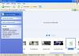
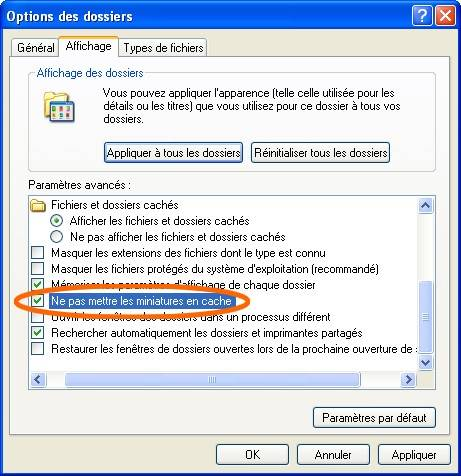
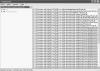
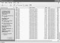

Si vous utilisez Windows depuis un moment, vous vous êtes à coup sûr déjà retrouvé devant de nombreux fichiers étranges nommés Thumbs.db, mais vous ne savez pas à quoi ça sert ? Est-ce un virus ? Peut-on les supprimer sans endommager Windows ?
En tout cas, ça prend beaucoup de place et on ne vous a pas demandé votre avis ! Vous allez enfin voir ici ce que c'est, et comment les éradiquer. :)
Lorsque l'on regarde les propriétés des fichiers Thumbs.db, on voit écrit ceci : Fichier de la base de données.
Thumbs est le diminutif de Thumbnails qui, en anglais informatique, trouve son équivalent en "miniature d'image".
db, quant à lui, est l'acronyme de "data base", c'est-à-dire "base de données".
Ce fichier est donc un fichier de base de données pour miniatures d'images.
Concrètement, c'est un fichier cache contenant les images miniatures de l'affichage "miniature" et "pellicule" d'un dossier. Lors de l'affichage du dossier, Windows crée ce fichier et y stocke les images en vue d'une utilisation prochaine, afin de ne pas les recréer à chaque fois, car ceci prend de la mémoire vive et est assez long à réaliser ; bref, ça l'arrange.
Cependant, le peu de gain occasionné, lui, entraîne la création de ces innombrables fichiers pouvant être gênants : par exemple quand on veut partager un dossier en P2P, ou copier un dossier, envoyer le contenu d'un dossier sur l'Internet (ça m'est déjà arrivé quand j'envoyais mes fichiers sur un serveur web) ou par e-mail, etc., les fichiers Thumbs.db sont eux aussi envoyés, et cela ralentit inutilement les opérations, car ils peuvent dépasser le méga-octet à l'unité. Sur un ordinateur datant d'environ 5 ans, il peut y avoir environ une centaine de fichiers Thumbs.db !
On peut les supprimer comme on veut, ils seront alors automatiquement recréés (si une certaine option n'a pas été modifiée). Et c'est justement là le problème si l'on veut s'en débarrasser. De plus, même les miniatures d'anciennes images supprimées restent dans ces fichiers.
Si vous en avez marre de voir ces fichiers et d'en subir les conséquences, vous avez le choix : soit vous faites en sorte de ne plus les voir s'afficher, soit vous les supprimez. La sous-partie suivante s'adresse aux personnes ne voulant plus les voir s'afficher tout en les laissant continuer de fonctionner. Si vous voulez les désactiver et les supprimer, passez-la.
Pour ne plus voir ces fichiers s'afficher à tout bout de champ, il vous suffit de modifier deux options de Windows permettant de ne plus voir ni les fichiers cachés, ni les fichiers systèmes protégés. C'est sans risque, ne vous en faites pas pour ça. Ouvrez n'importe quel dossier, puis cliquez sur "Outils -> Options des dossiers..." et enfin, procédez comme sur l'image ci-dessous : cochez "Ne pas afficher les fichiers et dossiers cachés" et "Masquer les fichiers protégés du système d'exploitation (recommandé)" si ce n'est pas déjà coché.
Pour éradiquer les fichiers Thumbs.db, il faut tout d'abord désactiver une option de Windows autorisant la mise en cache des miniatures : c'est sans risque, ne vous inquiétez pas !
Ouvrez n'importe quel dossier, puis faites cela dans la barre d'outils : "Outils -> Option des dossiers... -> Affichage" et cochez "Ne pas mettre les miniatures en cache".

Plus aucun Thumbs.db ne sera désormais créé par Windows. Si certains réapparaissent, c'est qu'ils ne viennent pas de votre ordinateur mais d'ailleurs (en téléchargeant par exemple, ou encore en transférant des dossiers à l'aide de disquettes ou de clés USB...). ^^
Maintenant que nous avons désactivé la mise en cache des miniatures, nous pouvons nous attaquer aux fichiers déjà présents. Il y a plusieurs solutions :
On utilise MS-DOS...
Il existe un procédé permettant de supprimer les fichiers Thumbs.db grâce à l'invite de commandes MS-DOS. Cependant, ça ne marche pas bien s'il existe plusieurs lecteurs (C:\, E:\, etc.). Pour accéder à l'invite de commandes MS-DOS, cliquez sur : "Démarrer -> Programmes -> Accessoires -> Invite de commandes". Tapez ensuite :
cd../..
del /S /AR /AS /AH /AA thumbs.db
... ou un logiciel spécialisé...
Je vous ai trouvé un bon logiciel pour supprimer les fichiers concernés : Télécharger DelThumbs.
Vous n'aurez alors plus qu'à cliquer sur "Chercher", cocher "inclure tous les disques" puis cliquer sur "Chercher -> Nouvelle recherche". Tous les fichiers Thumbs.db de vos disques seront alors affichés à droite. Cliquez ensuite sur "Outils -> Détruire fichiers sélectionnés" et vous voilà désormais débarrassés de ceux-ci.
... ou bien on laisse Windows les trouver !
Cette solution peut sembler un peu plus puissante que la première : la première m'ayant trouvée 21 fichiers sur mon ordinateur, celle-ci m'en a trouvée 27 ; cependant il ne faut pas s'y fier : cette solution trouve TOUS les fichiers, y compris ceux qui sont déjà dans la corbeille, et qui se trouvent à certains endroits auxquels on ne peut accéder, etc. ; ceci peut donc poser problème lors de votre tentative de suppression.
Il suffit de cliquer sur "démarrer -> Rechercher -> Des fichiers ou des dossiers" puis choisir Tous les fichiers et tous les dossiers. Tapez Thumbs.db dans la zone du nom de fichier à rechercher et très important : dans Options avancées, cochez Rechercher dans les dossiers systèmes, Rechercher dans les fichiers et les dossiers cachés et si ce n'est pas coché, Rechercher dans les sous-dossiers.
Lancez la recherche, et la liste de tous les Thumbs.db apparaît alors : sélectionnez-les tous (ceux dont l'adresse commence par une lettre de lecteur, car ce sont ceux qui ne poseront pas problème) puis envoyez-les à la corbeille (supprimez-les). Enfin : videz la corbeille. :)
Pour les utilisateurs de Windows Vista
Les utilisateurs de Windows Vista possèdent une option dans "Démarrer -> programmes -> Accessoires -> Outils système -> Nettoyage de disque" nommée "miniatures" permettant de les supprimer du même coup.
Par ailleurs, les fichiers Thumbs.db étant les miniatures des images, le logiciel Tweak UI permet leur exploitation et la modification de la taille des miniatures, de leur qualité, etc.
Message de fin
Voilà, nous avons enfin pu désactiver et supprimer ces fichiers encombrants ! À bientôt pour d'autres tutoriels. ;)
{kind=link}
{kind=link}
{kind=link}